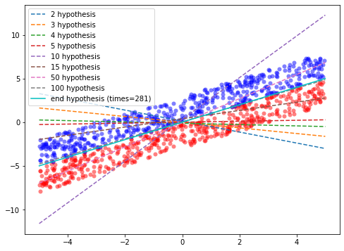
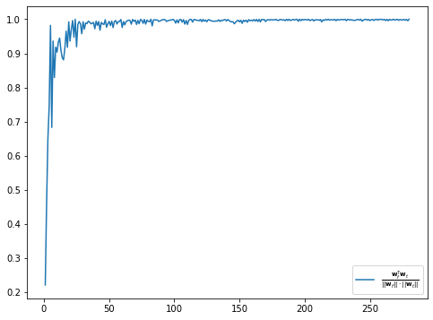
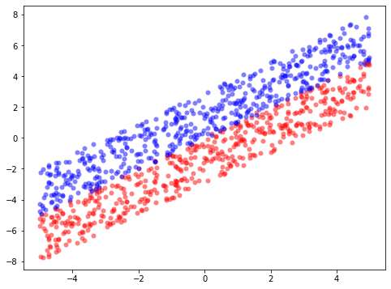
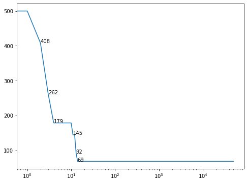

import numpy as np
import pandas as pd
import matplotlib.pyplot as plt
%matplotlib inline
Linear separable
Generate the data:
randlist1 = np.array([np.random.uniform(-5,5) for i in range(500)])
randlist2 = np.array([np.random.uniform(0,3) for i in range(500)])
data_m1_0 = pd.DataFrame(
{
"x0": 1,
"x1": randlist1,
"x2": randlist1+randlist2,
"y" : -1
}
)
data_p1_0 = pd.DataFrame(
{
"x0": 1,
"x1": randlist1,
"x2": randlist1 - randlist2,
"y" : +1
}
)
data = pd.concat([data_m1_0, data_p1_0], axis=0)
plt.figure(figsize=(8,6))
plt.scatter(data_m1_0["x1"], data_m1_0["x2"], c="r")
plt.scatter(data_p1_0["x1"], data_p1_0["x2"], c="b")
<matplotlib.collections.PathCollection at 0x7f96a17cf8b0>

data_m1 = data[data["y"] == -1]
data_p1 = data[data["y"] == +1]
plt.figure(figsize=(8,6))
plt.scatter(data_m1["x1"], data_m1["x2"], c="r", alpha=0.5, linewidths=0)
plt.scatter(data_p1["x1"], data_p1["x2"], c="b", alpha=0.5, linewidths=0)
w = data.iloc[np.random.randint(data.shape[0])]
w0 = w[0]; w1 = w[1]; w2 = w[2]
x = np.linspace(-6,6,100)
xx = np.linspace(-5,5,100)
plt.plot(x, -(w1/w2)*x - (w0/w2), "b", label="start hypothesis")
mis_m1 = data_m1[w0 * data_m1["x0"] + w1 * data_m1["x1"] + w2 * data_m1["x2"] > 0]
mis_m2 = data_p1[w0 * data_p1["x0"] + w1 * data_p1["x1"] + w2 * data_p1["x2"] < 0]
mis_data = pd.concat([mis_m1, mis_m2], axis=0)
length = mis_data.shape[0]
times = 1; wl = []
while length > 0:
wl.append(w)
mis_point = mis_data.iloc[np.random.randint(length),:]
w = w + mis_point["y"] * mis_point.iloc[0:3]
w0 = w[0]; w1 = w[1]; w2 = w[2]
mis_m1 = data_m1[w0 * data_m1["x0"] + w1 * data_m1["x1"] + w2 * data_m1["x2"] > 0]
mis_m2 = data_p1[w0 * data_p1["x0"] + w1 * data_p1["x1"] + w2 * data_p1["x2"] < 0]
mis_data = pd.concat([mis_m1, mis_m2], axis=0)
length = mis_data.shape[0]
times += 1
if times in [5, 10, 15, 50, 100]:
plt.plot(xx, -(w1/w2)*xx - (w0/w2), "--", label=f"{times} hypothesis")
if times > 50000 :
print("over 50000 times loops")
break
wl.append(w)
plt.plot(x, -(w1/w2)*x - (w0/w2), "c", label=f"end hypothesis (times={times})")
plt.legend()
plt.axis("equal")
plt.savefig("/Users/wanghaoming/Documents/LaTeX_doc/Machine_Learning/pla.png", bbox_inches='tight', dpi=500)

Convergence process of weight vector: $\frac{\mathbf{w}_{f}^{T}\mathbf{w}_t}{||\mathbf{w}_f||\cdot||\mathbf{w}_t||}$
wl1 = pd.DataFrame(wl)
wl2 = wl1[["x0", "x1", "x2"]].reset_index(drop=True)
wf = np.array([0,1,-1])
wt = wl2.dot(wf) / (np.array([wl2.loc[v].dot(wl2.loc[v]) for v in wl2.index]) * wf.dot(wf)) ** 0.5
plt.figure(figsize=(8,6))
plt.plot(
range(wt.shape[0]),
wt,
label= r"$\frac{\mathbf{w}_{f}^{T}\mathbf{w}_t}{||\mathbf{w}_f||\cdot||\mathbf{w}_t||}$"
)
plt.legend()
plt.savefig("/Users/wanghaoming/Documents/LaTeX_doc/Machine_Learning/converg.png", bbox_inches='tight', dpi=500)

Calculate the maximum number of iterations:
we have
$$ \begin{aligned} \mathbf{w}_{f}^{T}\mathbf{w}_{t+1} &= \mathbf{w}_{f}^{T}(\mathbf{w}_{t}+y_{n(t)}\mathbf{x}_{n(t)})\\ &= \mathbf{w}_{f}^{T}\mathbf{w}_{t} + y_{n(t)}\mathbf{w}_{f}^{T}\mathbf{x}_{n(t)}\\ &\geq \mathbf{w}_{f}^{T}\mathbf{w}_{t} + \min_{n}y_n\mathbf{w}_{f}^{T}\mathbf{x}_n\\ &> \mathbf{w}_{f}^{T}\mathbf{w}_{t}. \end{aligned} $$
and
$$ \begin{aligned} ||\mathbf{w}_{t+1}||^2 &= || \mathbf{w}_{t}+y_{n(t)}\mathbf{x}_{n(t)} ||^2\\ &= ||\mathbf{w}_{t}||^2+2y_{n(t)}\mathbf{w}_{t}^{T}\mathbf{x}_{n(t)} + y_{n(t)}^{2}||\mathbf{x}_{n}||^2\\ &\leq ||\mathbf{w}_{t}||^2+||\mathbf{x}_{n}||^2\\ &\leq ||\mathbf{w}_{t}||^2 + \max_{n}||\mathbf{x}_{n}||^2. \end{aligned} $$
define $R^2 = \max_{n}||\mathbf{x}||^2$ and $\rho = \min_{n}\frac{y_n\mathbf{w}_{f}^{T}\mathbf{x}_n}{||\mathbf{w}_f||}$
we have
$$ \begin{aligned} ||\mathbf{w}_t||^2 &\leq ||\mathbf{w}_{t-1}||^2 + R^2\\ &\leq ||\mathbf{w}_{t-2}||^2 + 2R^2\\ &\cdots\\ &\leq ||\mathbf{w}_{0}||^2 + tR^2\\ &=tR^2. \end{aligned} $$
i.e. $||\mathbf{w}_t||\leq R\sqrt{t}$
since
$$ \begin{aligned} \frac{\mathbf{w}_{f}^{T}\mathbf{w}_t}{||\mathbf{w}_{f}^{T}||\cdot||\mathbf{w}_{t}||} & = \frac{\mathbf{w}_{f}^{T}(\mathbf{w}_{t-1}+y_{n(t-1)}\mathbf{x}_{n(t-1)})}{||\mathbf{w}_{f}^{T}||\cdot||\mathbf{w}_{t}||}\\ &=\frac{\mathbf{w}_{f}^{T}\mathbf{w}_{t-1}}{||\mathbf{w}_{f}^{T}||\cdot||\mathbf{w}_{t}||} + \frac{y_{n(t-1)}\mathbf{w}_{f}^{T}\mathbf{x}_{n(t-1)}}{||\mathbf{w}_{f}^{T}||\cdot||\mathbf{w}_{t}||}\\ &= \frac{\mathbf{w}_{f}^{T}\mathbf{w}_{t-2}}{||\mathbf{w}_{f}^{T}||\cdot||\mathbf{w}_{t}||} + \frac{y_{n(t-2)}\mathbf{w}_{f}^{T}\mathbf{x}_{n(t-2)}}{||\mathbf{w}_{f}^{T}||\cdot||\mathbf{w}_{t}||} + \frac{y_{n(t-1)}\mathbf{w}_{f}^{T}\mathbf{x}_{n(t-1)}}{||\mathbf{w}_{f}^{T}||\cdot||\mathbf{w}_{t}||}\\ &\cdots\\ &=\frac{1}{||\mathbf{w}_t||}\cdot\sum^{t}_{i=1}\frac{y_{n(i)}\mathbf{w}_{f}^{T}\mathbf{x}_{n(i)}}{||\mathbf{w}_{f}^{T}||} \\ &\geq \frac{1}{||\mathbf{w}_t||}\cdot t\cdot \rho\geq \frac{t\rho}{R\sqrt{t}}\\ &=\frac{\rho}{R}\sqrt{t}. \end{aligned} $$
we have that $\frac{\sqrt{t}\rho}{R}\leq 1$ and $t\leq \frac{R^2}{\rho^2}$
x_vec = data[["x0", "x1", "x2"]].reset_index(drop=True)
y = data["y"]
R = (np.array([x_vec.loc[r].dot(x_vec.loc[r]) for r in x_vec.index]).max()) ** 0.5
rhot = ((np.array([wf.dot(x_vec.loc[v]) for v in x_vec.index]) * y) / (wf.dot(wf))**0.5)
rho = rhot.min()
print(R, rho)
9.422042798189155 0.007816573452601163
therefore the maximum iterations of this model is
maxt = (R/rho)**2
maxt
1452972.245723157
Non-Linear separable
Generate the data:
randlist1 = np.array([np.random.uniform(-5,5) for i in range(50)])
randlist2 = np.array([np.random.uniform(-0.1,3) for i in range(50)])
data_m1_0 = pd.DataFrame(
{
"x0": 1,
"x1": randlist1,
"x2": randlist1+randlist2,
"y" : -1
}
)
data_p1_0 = pd.DataFrame(
{
"x0": 1,
"x1": randlist1,
"x2": randlist1 - randlist2,
"y" : +1
}
)
data = pd.concat([data_m1_0, data_p1_0], axis=0)
plt.figure(figsize=(8,6))
plt.scatter(data_m1_0["x1"], data_m1_0["x2"], c="r", alpha=0.5, linewidths=0)
plt.scatter(data_p1_0["x1"], data_p1_0["x2"], c="b", alpha=0.5, linewidths=0)
plt.savefig("/Users/wanghaoming/Documents/LaTeX_doc/Machine_Learning/non_sep.png", bbox_inches='tight', dpi=500)

Building Pocket Model:
data_m1 = data[data["y"] == -1]
data_p1 = data[data["y"] == +1]
plt.figure(figsize=(8,6))
plt.scatter(data_m1["x1"], data_m1["x2"], c="r", alpha=0.5, linewidths=0)
plt.scatter(data_p1["x1"], data_p1["x2"], c="b", alpha=0.5, linewidths=0)
w = data.iloc[np.random.randint(data.shape[0])]
w0 = w[0]; w1 = w[1]; w2 = w[2]
x = np.linspace(-6,6,100)
xx = np.linspace(-5,5,100)
plt.plot(x, -(w1/w2)*x - (w0/w2), "b", label="start hypothesis")
mis_m1 = data_m1[w0 * data_m1["x0"] + w1 * data_m1["x1"] + w2 * data_m1["x2"] > 0]
mis_m2 = data_p1[w0 * data_p1["x0"] + w1 * data_p1["x1"] + w2 * data_p1["x2"] < 0]
mis_data = pd.concat([mis_m1, mis_m2], axis=0)
length = mis_data.shape[0]
lengthl = []
T = 5000
for i in range(T):
lengthl.append(length)
mis_point = mis_data.iloc[np.random.randint(length),:]
ww = w + mis_point["y"] * mis_point.iloc[0:3]
w0 = ww[0]; w1 = ww[1]; w2 = ww[2]
mis_m1 = data_m1[w0 * data_m1["x0"] + w1 * data_m1["x1"] + w2 * data_m1["x2"] > 0]
mis_m2 = data_p1[w0 * data_p1["x0"] + w1 * data_p1["x1"] + w2 * data_p1["x2"] < 0]
mis_data_m = pd.concat([mis_m1, mis_m2], axis=0)
length_m = mis_data_m.shape[0]
if length_m < length:
w = ww
mis_data = mis_data_m
length=length_m
# if i in [5, 10, 15, 50, 100]:
# plt.plot(xx, -(w1/w2)*xx - (w0/w2), "--", label=f"{i} hypothesis")
lengthl.append(length)
plt.plot(x, -(w1/w2)*x - (w0/w2), "c", label=f"end hypothesis (times={T})")
plt.legend()
plt.axis("equal")
plt.savefig("/Users/wanghaoming/Documents/LaTeX_doc/Machine_Learning/pocket.png", bbox_inches='tight', dpi=500)
Error prediction number
ll = pd.Series(lengthl)
plt.figure(figsize=(8,6))
ll.plot()
plt.xscale("log")
for i in range(1, len(ll)):
if ll[i] < ll[i-1]:
plt.text(i ,ll[i], ll[i])
plt.savefig("/Users/wanghaoming/Documents/LaTeX_doc/Machine_Learning/minlen.png", bbox_inches='tight', dpi=500)
